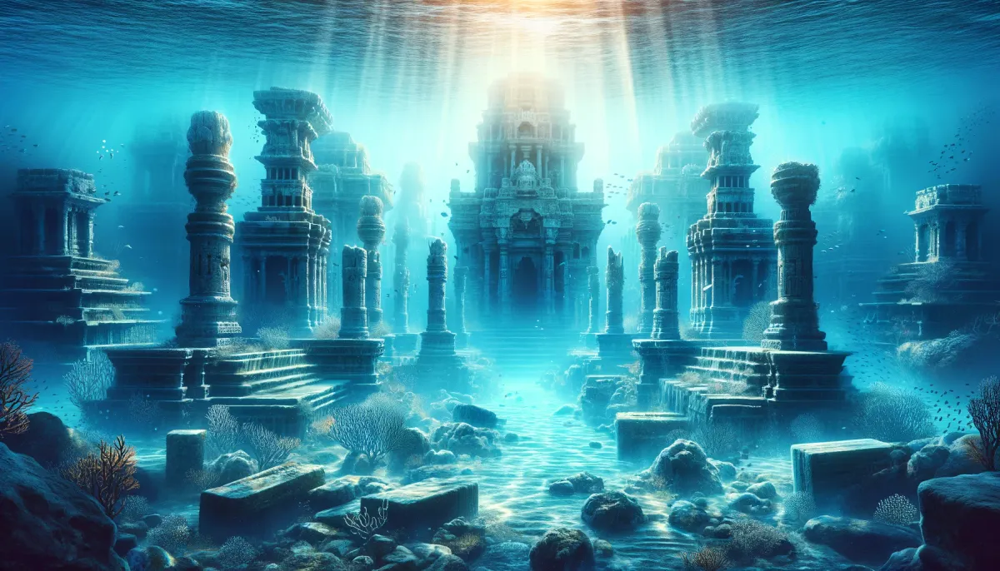
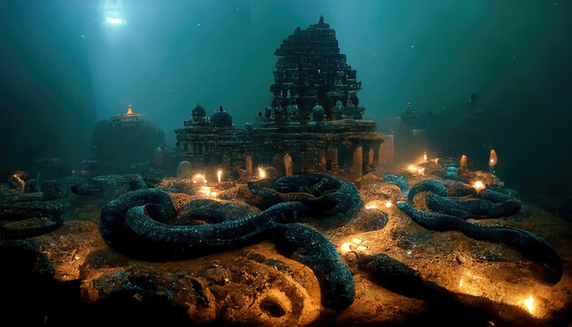
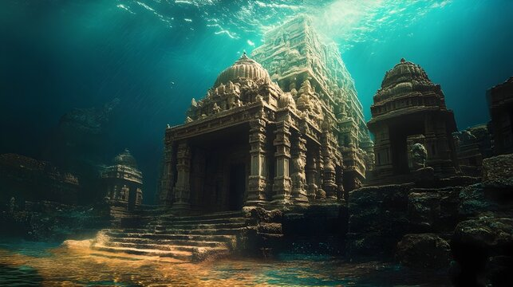
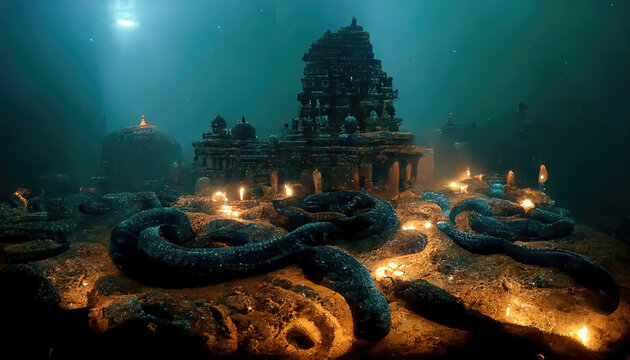
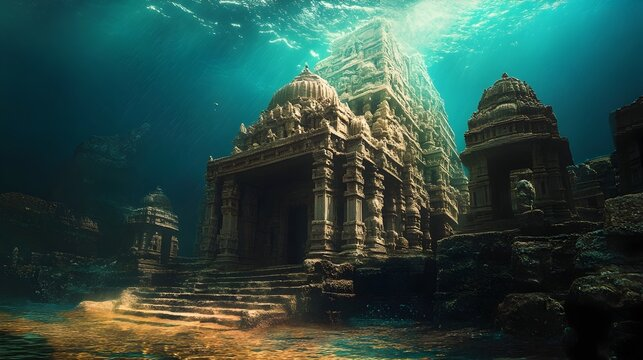
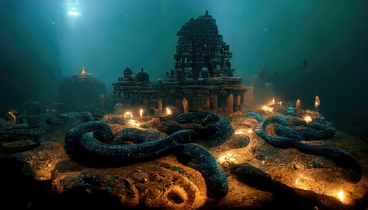
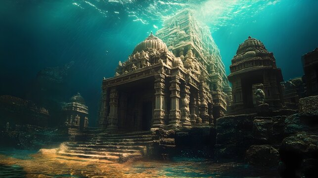
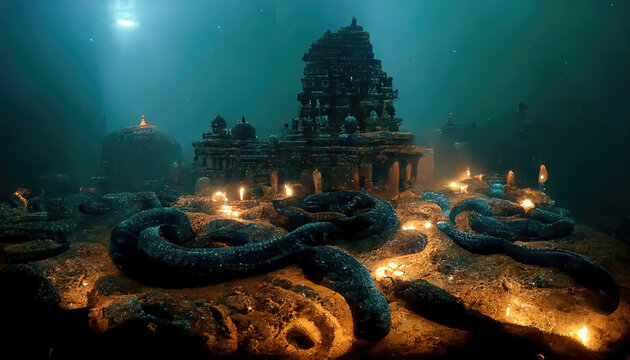
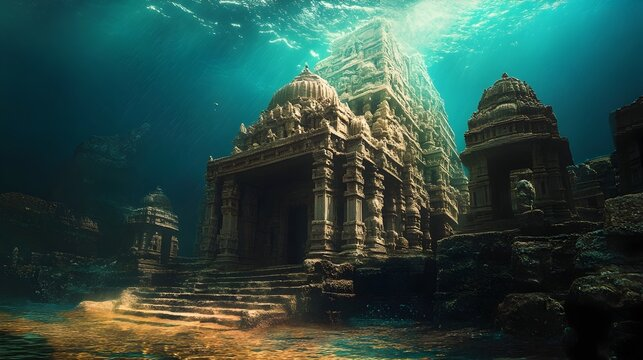

Image Gallery

 





The Legendary City of Lord Krishna
Dwarka, located in Gujarat, India, is one of the seven most ancient religious cities in the country. It is believed to have been founded by Lord Krishna after leaving Mathura.
According to Hindu mythology, Dwarka was a golden city built on the western coast. Archaeological evidence has been found underwater, suggesting the existence of a flourishing ancient city.
Dwarka is home to many ancient temples, with the most famous being the Dwarkadhish Temple, dedicated to Lord Krishna. The temple exhibits Chalukya-style architecture and features:
Dwarka is one of the Char Dham (Four Abodes) pilgrimage sites and holds immense significance in Hinduism. It is also one of the Sapta Puri, the seven sacred cities.
The festival of Janmashtami, celebrating Krishna's birth, is a major event in Dwarka, drawing thousands of devotees every year.

